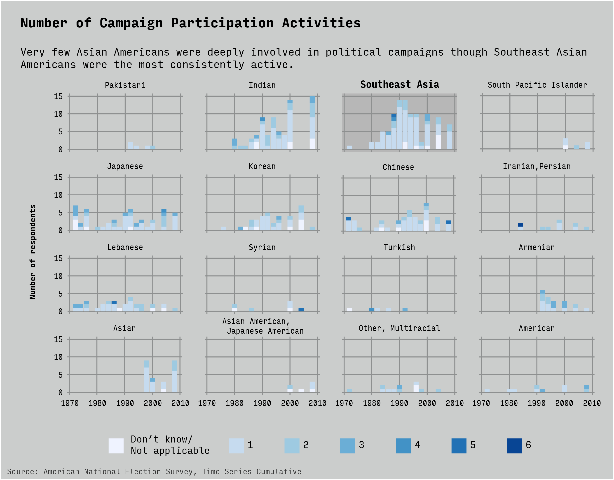

Data Visualization Project
Sam Wu
Final project for a data visualization graudate-level class at the New School
Why this data?
The Asian voting block is not monolithic. I chose this dataset to dive into how do various Asian ethnicities participate in the political system.
Within the community, we often hear about how inactive the community is or, for those who do participate, conservative the vote tends to be. I wanted to see if this was true and if it had changed over time.
What does the data say?
Below is a look into how the Asian American community has registered and voted for national elections over time. The dataset did not include respondents from before 1966.
The most active populations are: Indian, Southeast Asian, Japanese (which includes Japanese Americans).

A weakness of this dataset is the decision to group Southeast Asian respondents into a single group. This would include Filipinos, Vietnamese, Laotians, Cambodians, etc. and could be masking many of the differences between these communities.
Below is a look into the party of the presidential nominee that Asian Americans voted for. There's an interesting trend for Chinese respondents not voting in the presidential race. The Southeast Asian vote proportion peaked for Republicans in 1996. Again, without an ability to separate the Southeast Asian "ethnicity", it is difficult to draw any conclusions on this community.

The ANES data includes a count of how many different ways a respondent engaged politically during a campaign. Engagement is categorized as one of the following behaviors during the campaign: try to influence others, attend political meetings/rallies, work for a party/candidate, display candidate button/sticker, donate money to the party or candidate.
Again, the most consistent engagement is among the Southeast Asian group. A dive into the data brought hope that information on where the parents of these respondents were born would better illuminate their specific identities. Unfortunately, ANES coded all Southeast Asian nations as a single option for birthplace. The vast majority of Southeast Asian respondents said that their parents were not born in the United States.

Despite not being able to further differentiate the Southeast Asian group, the data did reveal what were they perceived as the top national issues and two jump out as the most common across time: Economic and Social Welfare. It is not surprising the economy is one of them but social welfare is not often reported upon as a major issue for the Asian American community so it is good to see its importance revealed in this data set. The Asian American community includes some of the richest and poorest communities, even among the same ethnicity.
How did I get here?
Past charts here